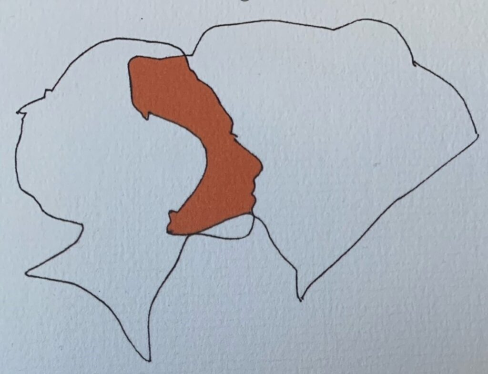

Blog · 11 september 2023
Half beer, half mens
De instructies wat te doen als je een beer tegenkomt heb ik zeer ter harte genomen toen ik een lange trail ging bewandelen in de Rocky Mountains in Canada. Kijk dat beest niet in zijn gele ogen, blijf bij anderen, maak je zo groot mogelijk en produceer herrie.
They seem so clumsy but they ar so fast, klonk als extra waarschuwing.
Het lijkt wel of Nastassja Martin, een Franse antropologe, juist de ontmoeting opzoekt om er een confrontatie mee aan te gaan. Bevriest menigeen bij het aanzien van een dergelijk grommend wild dier, zij vliegt eropaf en terwijl haar schedel kraakt in de muil van het roofdier, hakt zij in op haar tegenstander met een ijshouweel waarna het beest loslaat en er met een stuk van haar kaak en enkele kiezen vandoor gaat.
Ze overleeft haar avontuur en na behandeling in een ziekenhuis in Kamtsjatka in Siberië in de buurt van Alaska en later in Parijs maakt ze een lange en pijnlijke revalidatie door.
In haar boek “Geloven in het wild” geeft ze ons inzicht in haar innerlijke processen bij het verwerken van deze, zonder overdrijving, heftige ontmoeting. Natuurlijk, de angst, pijn, medische hybris, etc. maar wat het bijzonder interessant maakt is de manier hoe ze reageert op de hulp die daarbij ze kreeg van een professionele Franse therapeute en die sterk contrasteert met de manier hoe de Evenen, de lokale bevolking van dat schiereiland, na haar gevecht haar leert de dramatische gebeurtenis te interpreteren.
De therapeute heeft het volgende duidelijk gemaakt. De beer en de gevolgen daarvan vragen om voor eens en voor altijd het geweld af te zweren waarmee ze rondloopt op de wereld. Het ongehoorde geweld in die kaak op kaak ontmoeting duidt op een zoektocht naar iets in haarzelf. De beer is een spiegel, de beer is een uitdrukking van iets anders dan hijzelf, van iets dat met haar te maken heeft. Deze uitleg irriteert Martin, maakt haar kwaad en ze besluit tegen alle adviezen in terug te gaan naar Siberië om te vinden waar ze innerlijk naar op zoek was.
Zij merkt dat ze veel meer open staat voor wat antropologen animisme noemen-een filosofisch concept waarin zielen en geesten niet alleen bestaan in mensen en dieren maar ook in planten, donderen en bliksem, bergen en rivieren—dat er een wil bestaat buiten de mensen om, een intentie los van de mensheid.E en Eveneese vrouw (inmiddels haar vriendin) legt haar uit dat ze nu een medka is, half mens, half beer en dat dromen-waar de Evenen erg aan hechten—nu zowel bij beer als mens dezelfde zijn. Zij ziet de antropologe als een geschenk van de beer die haar levend aan de Evenen heeft bezorgd.
Als ze uiteindelijk besluit terug te gaan naar Frankrijk zegt haar Eveneese vriendin dat het leven altijd een vorm van wachten is. Ze zullen wachten op haar terugkeer zoals ze met alle energie en overgave de kou en wildernis trotseren en wachten op het voorjaar als het ijs weer is gesmolten.
Een levenslange vriendschap van deze sjamanen
Misschien moet deze half beer/half mens ook maar eens wijsheden in het oor van opperbeer Poetin gaan fluisteren.
Bestudeer ook het plaatje op je gemak. Een prachtige optische illusie. Een jonge vrouw of een beer of…….?
